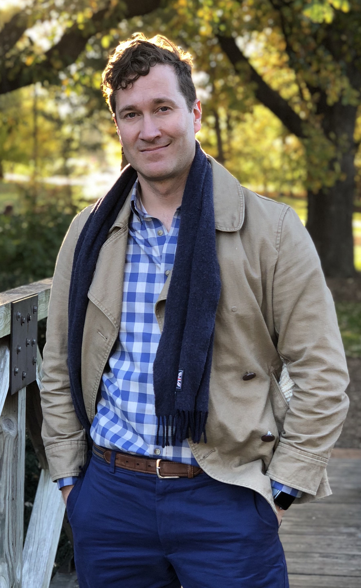
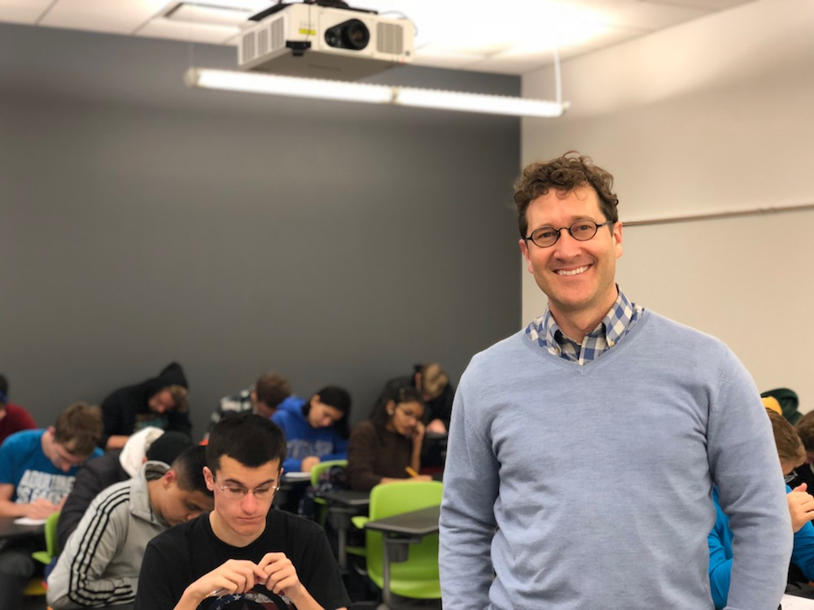
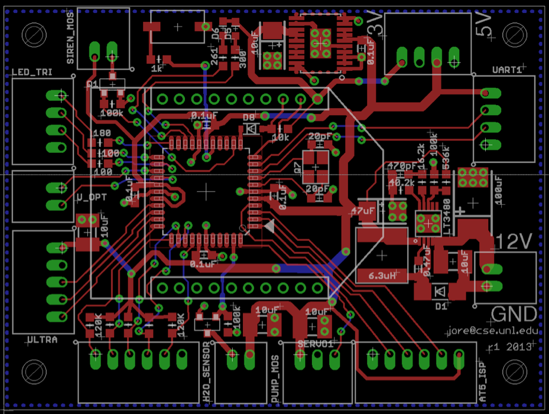
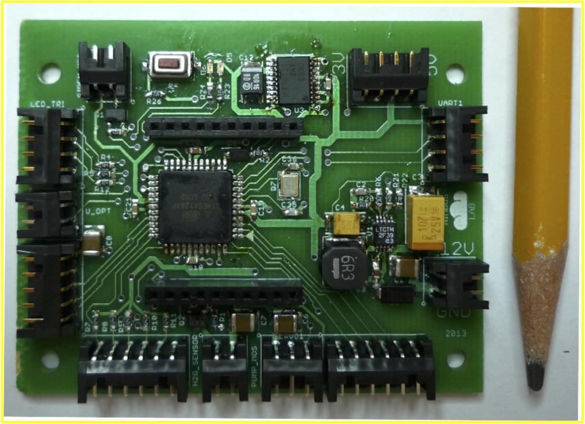
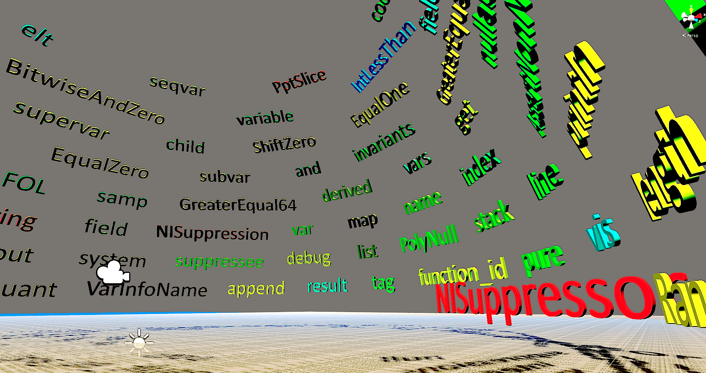
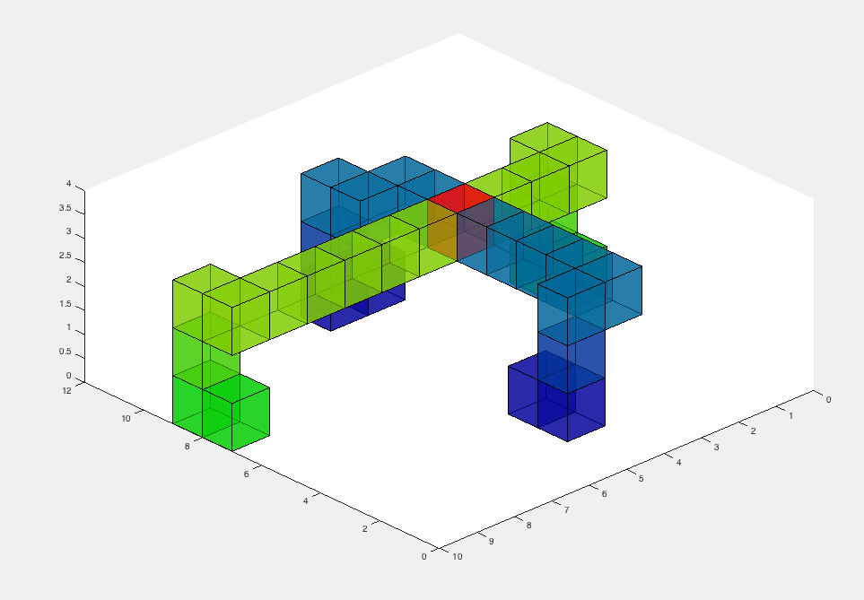

I am actively recruiting motivated PhD students to join my lab starting in 2020. Interested? Contact me at jwore at ncsu dot edu.
Spring 2020 class: 'Software Engineering' 326
Fall 2020 class: 'Software for Robotics Today' 591/791 (syllabus)
SciENcv Orcid

Background
I work on robots because robots can help us overcome the world's vital challenges: our changing climate, food production, nuclear responsibilities, exploring space, environmental monitoring, and liberating people from dangerous, dirty, and dull work.
I seek to accelerate and amplify the processes and tools that can be a catalyst for new capabilities.
I'm John-Paul Ore, an assistant professor of computer science at the North Carolina State University
I have a B.A. in Philosophy from the University of Chicago.
Research Interests
My research interests focus on applying program analysis techniques to software that controls robots and senses and acts in the physical world.
This includes abstract type inference of physical unit types (like 'meters-per-second') with dataflow analysis,
Probabilistic techniques for combining semantic information in identifiers (variable names) with code flow inference,
and empirical measurements of how developers make decisions about robotic software, and how to connect program analysis with robotic simulation.
I'm specifically focused on program analysis and software testing that helps make systems safer and more reliable while remaining practical and economically efficient.
@InProceedings{10.1007/978-3-319-67361-5_14,
author="Ore, John-Paul
and Detweiler, Carrick",
editor="Hutter, Marco
and Siegwart, Roland",
title="Sensing Water Properties at Precise Depths from the Air",
booktitle="Field and Service Robotics",
year="2018",
publisher="Springer International Publishing",
address="Cham",
pages="205--220",
isbn="978-3-319-67361-5"
}
@INPROCEEDINGS{8202229,
author={J. P. Ore and S. Elbaum and C. Detweiler},
booktitle={2017 IEEE/RSJ International Conference on Intelligent Robots and Systems (IROS)},
title={Dimensional inconsistencies in code and ROS messages: A study of 5.9M lines of code},
year={2017},
volume={},
number={},
pages={712-718},
keywords={control engineering computing;operating systems (computers);robot programming;source code (software);ROS classes;ROS code;ROS messages;ROS programs;ROS software;dimensional analysis;dimensional inconsistencies;inconsistencies detection;inconsistency type;physical quantities;physical unit manipulation;robot operating system;robot software;C++ languages;Geometry;Libraries;Meters;Robots;Software;Tools},
doi={10.1109/IROS.2017.8202229},
ISSN={},
month={Sept}}
@inproceedings{Ore:2017:LDP:3092703.3092722,
author = {Ore, John-Paul and Detweiler, Carrick and Elbaum, Sebastian},
title = {Lightweight Detection of Physical Unit Inconsistencies Without Program Annotations},
booktitle = {Proceedings of the 26th ACM SIGSOFT International Symposium on Software Testing and Analysis},
series = {ISSTA 2017},
year = {2017},
isbn = {978-1-4503-5076-1},
location = {Santa Barbara, CA, USA},
pages = {341--351},
numpages = {11},
url = {http://doi.acm.org/10.1145/3092703.3092722},
doi = {10.1145/3092703.3092722},
acmid = {3092722},
publisher = {ACM},
address = {New York, NY, USA},
keywords = {dimensional analysis, physical units, program analysis, robotic systems, static analysis, type checking, unit consistency}}
@inproceedings{Ore:2017:PLA:3092703.3098219,
author = {Ore, John-Paul and Detweiler, Carrick and Elbaum, Sebastian},
title = {Phriky-units: A Lightweight, Annotation-free Physical Unit Inconsistency Detection Tool},
booktitle = {Proceedings of the 26th ACM SIGSOFT International Symposium on Software Testing and Analysis},
series = {ISSTA 2017},
year = {2017},
isbn = {978-1-4503-5076-1},
location = {Santa Barbara, CA, USA},
pages = {352--355},
numpages = {4},
url = {http://doi.acm.org/10.1145/3092703.3098219},
doi = {10.1145/3092703.3098219},
acmid = {3098219},
publisher = {ACM},
address = {New York, NY, USA},
keywords = {dimensional analysis, physical units, program analysis, robotic systems, static analysis, type checking, unit consistency}
}
@Article{w7116467,
AUTHOR = {Chung, Michaella and Detweiler, Carrick and Hamilton, Michael and Higgins, James and Ore, John-Paul and Thompson, Sally},
TITLE = {Obtaining the Thermal Structure of Lakes from the Air},
JOURNAL = {Water},
VOLUME = {7},
YEAR = {2015},
NUMBER = {11},
PAGES = {6467},
URL = {http://www.mdpi.com/2073-4441/7/11/6467},
ISSN = {2073-4441},
DOI = {10.3390/w7116467}
}
2015
Autonomous Aerial Water Sampling.cite John-Paul Ore, Sebastian Elbaum, Amy Burgin, and Carrick Detweiler. Journal of Field Robotics
@article{ore2015autonomous,
title={Autonomous aerial water sampling},
author={Ore, John-Paul and Elbaum, Sebastian and Burgin, Amy and Detweiler, Carrick},
journal={Journal of Field Robotics},
volume={32},
number={8},
pages={1095--1113},
year={2015},
publisher={Wiley Online Library}
}
@article{detweiler2015environmental,
title={ENVIRONMENTAL REVIEWS AND CASE STUDIES: Bringing Unmanned Aerial Systems Closer to the Environment},
author={Detweiler, Carrick and Ore, John-Paul and Anthony, David and Elbaum, Sebastian and Burgin, Amy and Lorenz, Aaron},
journal={Environmental Practice},
volume={17},
number={3},
pages={188--200},
year={2015},
publisher={Taylor \& Francis}
}
Surface Classification for Sensor Deployment from UAV Landings.cite David Anthony, Elizabeth Basha, Jared Ostdiek, John-Paul Ore, and Carrick Detweiler. ICRA - Proceedings of IEEE International Conference on Robotics and Automation Seattle, Washington
@inproceedings{anthony2015surface,
title={Surface classification for sensor deployment from UAV landings},
author={Anthony, David and Basha, Elizabeth and Ostdiek, Jared and Ore, John-Paul and Detweiler, Carrick},
booktitle={Robotics and Automation (ICRA), 2015 IEEE International Conference on},
pages={3464--3470},
year={2015},
organization={IEEE}
}
@inproceedings{palmer2015air,
title={On air-to-water radio communication between UAVs and water sensor networks},
author={Palmer, Jacob and Yuen, Nicholas and Ore, John-Paul and Detweiler, Carrick and Basha, Elizabeth},
booktitle={Robotics and Automation (ICRA), 2015 IEEE International Conference on},
pages={5311--5317},
year={2015},
organization={IEEE}
}
@inproceedings{anthony2014controlled,
title={Controlled sensor network installation with unmanned aerial vehicles},
author={Anthony, David and Ore, John-Paul and Detweiler, Carrick and Basha, Elizabeth},
booktitle={Proceedings of the 12th ACM Conference on Embedded Network Sensor Systems},
pages={348--349},
year={2014},
organization={ACM}
}
2013
Autonomous Aerial Water Sampling (link to journal version). John-Paul Ore, Sebastian Elbaum, Amy Burgin, Baoliang Zhao, and Carrick Detweiler. FSR'13 -Field and Service Robotics. Brisbane, Australia
@inproceedings{thompson2015airborne,
title={An airborne robotic platform for mapping thermal structure in surface water bodies},
author={Thompson, SE and Chung, M and Detweiler, C and Ore, JP},
booktitle={AGU Fall Meeting Abstracts},
year={2015}
}
Towards Monitoring Saline Wetlands with Micro UAVs.cite Ore John-Paul, Amy Burgin, Valerie Schoepfer, and Carrick Detweiler. Robot Science and Systems Workshop on Robotic Monitoring
Berkeley, California, 2014.
@inproceedings{ore2014towards,
title={Towards monitoring saline wetlands with micro uavs},
author={Ore, JPWC and Burgin, Amy and Schoepfer, Valerie and Detweiler, Carrick},
booktitle={Robot Science and Systems Workshop on Robotic Monitoring, Berkeley, California},
year={2014}
}
Sensor Installation via UAVs for Environmental Monitoring. David Anthony, John-Paul Ore, and Carrick Detweiler. Robot Science and Systems Workshop on Robotic Monitoring,
Berkeley, California, 2014.
Using Unmanned Aerial Vehicles (UAVs) to Map Sources of Groundwater in a Saline Wetland. Elizabeth R. Waring, Valerie A. Schoepfer, Amy Burgin, John-Paul Ore, Carrick Detweiler, and Sebastian Elbaum.
Poster presentation at the Joint Aquatic Sciences Meeting, Portland, OR 18-23 June 2014.
Towards Autonomous Aerial Water Sampling. John-Paul Ore, Sebastian Elbaum, Baoliang Zhao, and Carrick Detweiler. Robot Science and Systems Workshop on Robotics for Environmental Monitoring
Berlin, Germany, 2013.
TEACHING AND MENTORING
Research Mentor for undergraduate Becca Horzewski 2016--17
Research Mentor for undergraduate Lambros Karkazis 2018
Graduate Teaching Assistant: Software Engineering II : SOFT-260, FALL 2018 ( 4.7 / 5, student evaluations)

FEEDBACK FROM STUDENTS:
"Excellent understanding of the material, very good at explaining topics in a way that gives a deeper than surface-level understanding."
"[John-Paul] is very kind and engaging and knowledgeable on software topics."
"Effective Communication Skills paired with Comprehensive Knowledge of the material."
"Knowledgable, friendly, great attitude, has an enthusiasm for what he does."
"[John-Paul] displays amazing patience and kindness when explaining new concepts!"
Demonstration of autonomous aerial water sampling system at Blue Oak Ranch Reserve, near San Jose, CA, USA. UAV uses GPS to navigate over the water body, then uses ultrasonic sensors and conductivity sensors to detect the water's surface. The pump has to be submerged to prime before turning it on. Can collect 3 separate water samples and purge the system between sampling locations by shooting water overboard.
Pumping water through a 67-micron screen to filter for Zebra Mussel 'Velligers' (baby Zebra Mussels). Initial results indicate this method is effective.
Water sampling UAV crashes into water on a cold morning. A single motor reported it was on and spinning even though it stuttered and momentarily provided no thrust. Lessons learned: 1) Launch away from shore; 2) freshwater crashes don't destroy electronics (because freshwater is not a good conductor, unlike saltwater).
3-D Water thermal structure interpolated from temperature readings taken from a thermometer suspended from a UAV. Video reveals internal thermal structure of approximately 6x6 meters of a lake at UC Berkeley's Blue Oak Ranch Reserve.
Laser scans from a SICK-TIM571 with Vicon markers to localize readings. Scans show the perimeter of the VICON cage at the NIMBUS Lab.
Simulink model of UAV with cable-suspended payload demonstrating pathological behavior when cable imparts a small spring force. Cable is modeled as a series of links. Model available at: https://github.com/jpwco/uav-pendulum-simulation
Simulink model of UAV translating between two waypoints including a change in attitude (rotation). Used to validate model with behavior of real quadcoptors.
Simulink model of UAV with a cable-suspended payload showing an initial start of full-extended 90 degrees.
Early autonomous water sampling prototype in Vicon motion-capture room.
UAV follows iPad. Demonstration of webpage sharing GPS information relayed to a UAV's position guidance (2012).
Schematic for embedded system for UAV-base water sampling. Power distribution on the middle right, capacitors at bottom middle to smooth the power to servo and water pump.

Embedded system for UAV-base water sampling. ATMega328p used to control submerged water pump, read from ultrasonic rangers and conductivity sensors. Communicates with a command and control system (laptop) by XBee Radio (2.4GHz).

PROJECTS
2014 Class Project: Virtual Reality (Unity) 3-D rendering of Text Clouds for source code visualization with the Oculus Rift DK1 (2014). Class project experiment with using virtual reality for program comprehension. Word color is the identifier type, font size is based on word frequency (TD-IDF).

2015 Project experimenting with spatial logics to predict spatio-temporal regions where two UAVs might collide. (Matlab)

PERSONAL
Hiking, travelling, cycling, cuisine, photography, and birding.